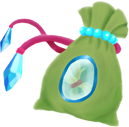
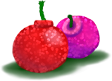
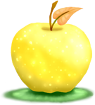
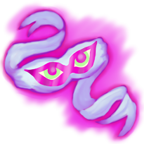
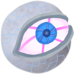

|
Item |
Description |
Country of Origin |
Ingredients |
Side Effects |
Cost |
|
Rose Cream: Appears to be a simple skin cream with a fragrant scent of roses. Upon application, however, the user will be able to withstand winds of up to 80 mph with little issue. |
Bara-Nokuni |
Rose petals, rose bark, mint leaves, and beeswax |
Wind Tolerance +5 |
100G |
 |
Glyph of Bast: A tablet from a far away land. Believed to have once belonged to the warrior queen, Aui of the Orchid, holders of the tablet are given the ability to either turn into a cat or be able to speak their tongue. The effect remains a mystery to this day, as none have come forward to reveal what exactly happens. |
Ardalwah |
n/a; it's a stone tablet and can't be reproduced. |
"Cat Walk" |
900G |
|  |
Ice Hairs: This pouch is believed to hold a lock of hair from the ice fairy, Titania, who is belived to drive away visitors to Mt. Glace. The hairs are so cold that even in the heat, they remain frozen. Can cure someone afflicted with the Curse of Prometheus. |
Mt. Glace |
One lock of Ice fairy hair |
Cure [FireCurse] |
300G |
|  |
Cherry bombs: Utilized by ninjas, it is a simple children's prank turned into a formidable weapon. Once detonated, it releases a smoke that irritates the nostrils of those nearby. Some say the smell is a mix of cherries and amplified black pepper. |
Bara-Nokuni |
Black powder, cherry perfume, candle wick, and dried leaves |
Confusion, Blind |
100G |
|  |
Golden Apple: Holders of a golden apple are said to romantically attract the nearest people with the weakest mental fortitude. People will literally go to war for your hand! |
Pterygia |
Blessed Appleseed |
Charm +15 |
550G |
|  |
Sash of Truth: Once the wearer blindfolds themselves with this sash, the wearer can view the innermost thoughts of those nearby. Warning: not suitable for those who can't handle the truth! |
Beberi |
Cloth of the Watcher, clear glasses |
Sight +20 |
850G |
|  |
Eye of the Cyclops: Not the real eye of Polyphemus, but constructed in its likeness. This eye can absorb light, amplify it, and emit a powerful beam. Warning: users should wear protective eyewear at all times when item is in use. |
Isle of Cyclopses, Pterygia |
Ultra clear lens, metal fibers, and solar gem |
Laser Sight |
2000G |
|  |
Sword of Seven Sorrows: A weapon crafted from the seven tears of nymphs who mourn those lost in the wake of Disea's destruction: Rubea, Aurantia, Flavo, V'ridi, Caerulea, Indicua, and Viola. This sword is said to be able to cut through anything provided the user applies their own energy to the sword. |
Whispering Forest, Albair |
7 colored tears |
Attack +20 |
7000G |